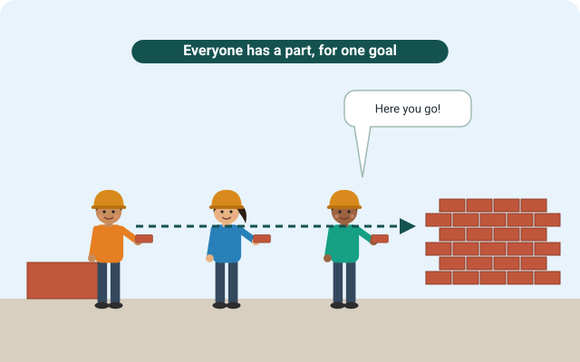
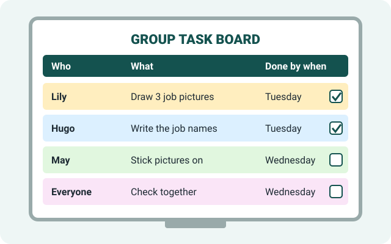
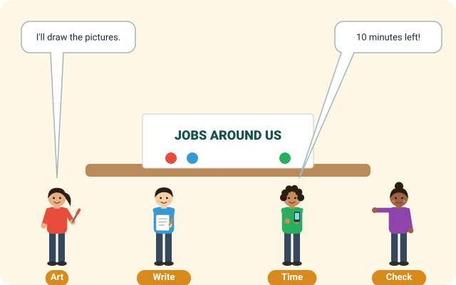

K8 · Teamwork and respecting differences › Level 1 Exploring
Finishing a task together
For the adult. This lesson has a real task: the group makes a "Jobs around us" poster. The poster is used again in Lesson 7.
- You need: large paper (A3 or card), coloured pens, glue, the Job cards, and the Task board template.
- Group: 2–4 children (brothers and sisters, neighbours, or a group in class). If there is only one child at home, parents join the group.
- Time: 15–20 minutes to read the lesson. About 30 more minutes for the poster, which can be the next day.
- Let the children share out the tasks. Only ask prompting questions: "Who's doing this part? Done by what time?"
1. Objectives
- Make a Task board with your group: who, what, done by when.
- Finish your own part and ask when you need help.
2. Retrieval warm-up
- What is a gender stereotype about jobs?
- Turn "Girls can't be electricians" into a question.
Answers
- The belief that a job only suits boys, or only suits girls.
- For example: "What skills does an electrician need?"
Review: Anyone can do this job.
3. Explanation
Almost every job involves working with other people. Builders pass bricks to each other. A school kitchen has people who cook, people who serve, and people who wash up.

A group works well when it has 3 things:
- One shared goal. Everyone knows what the group needs to make.
- A clear part for each person. Nobody does the same thing twice, and no part is forgotten.
- Helping each other when needed. When someone gets stuck, the group helps.
The simplest tool is a Task board with 3 columns: Who – What – Done by when. Each task has only one person in charge. That way, everyone knows their part.

The group can add small roles. The timekeeper tells the group how much time is left. The checker looks over the work before it is handed in.
Group work in 4 steps
- Say the goal clearlyWhat does the group need to make?
- Make a Task boardWho – What – Done by when.
- Do your partIf it's hard, ask early.
- Put it together and checkThe whole group checks and fixes it.
4. Workplace example
Hypothetical scenario. Three cousins make a "Jobs around us" poster for a family fair at home: Tom (age 10), Nina (age 8) and Billy (age 6).
They make a Task board before they start:
| Who | What | Done by when |
|---|---|---|
| Billy | Colour 3 job pictures | 4:00 |
| Nina | Stick the Job cards on the paper | 4:30 |
| Tom | Write the title, be the timekeeper | 5:00 |
| Everyone | Check it together | 5:00 |
Halfway through, Billy runs out of red pen. Nina shares her pen with him. Tom reminds them: "10 minutes left!" At 5:00, they check it together and stick on a card that was missed.

Why this works: each person has a part that suits them. Billy, the youngest, does the colouring. Someone keeps time. When one child runs out of something, the group shares at once. Checking together finds the missing part.
5. Practice
Make a "Jobs around us" poster with your group, using the Job cards you have. Make a Task board before you start.
If you cannot make the poster yet, choose a household task that needs several people. For example: setting the table for dinner.
Hint 1
Share tasks by ability. Younger children do simple tasks. Older ones do tasks that need more writing.
Hint 2
Write only one person for each task. If several people help, choose one person to be in charge.
Model answer (setting the table for dinner)
| Who | What | Done by when |
|---|---|---|
| Lily | Wipe the table | 6:15 |
| Hugo | Put out bowls and cutlery | 6:20 |
| Mum | Bring the food to the table | 6:25 |
| Everyone | Sit down at the table | 6:30 |
A good teammate does 4 things
6. Self-check
Choose an answer. Every option has an explanation.
Question 1. On the Task board, the person for "Write the title" is "everyone". What is the problem?
-
Correct. Correct. Each task should have one main person in charge.
-
Not quite. When everybody does it, it easily becomes nobody does it.
-
Not quite. The title is part of the poster, so someone needs to be in charge of it.
Question 2. Billy, age 6, is in a group with 10-year-olds. What is a fair way to share the tasks?
-
Not quite. A task that is too hard can upset Billy and slow the group down.
-
Correct. Correct. Sharing by ability helps everyone finish their part.
-
Not quite. Every member should have a part.
Question 3. While working, your friend runs out of coloured pens. What does a good teammate do?
-
Correct. Correct. Sharing things keeps the whole group from slowing down.
-
Not quite. If one part is slow, the whole group is slow.
-
Not quite. Doing it without asking can cause double work and hurt feelings.
Question 4. What does the timekeeper in a group do?
-
Correct. Correct. Then the group knows whether to speed up.
-
Not quite. Everyone still does their own part.
-
Not quite. The timekeeper does not mark anyone.
Question 5. Review of Lesson 3. Both men and women can do a job if the person…
-
Correct. Correct. A job needs skills, not being a boy or a girl.
-
Not quite. This is a gender stereotype about jobs.
-
Not quite. Age is not the main condition. Skills are what matter.
7. Reflection
The adult asks, and you answer out loud. The site saves nothing.
- What was your part today? Did you finish it?
- When did the group need to help each other? Who helped, and how?
8. Real-world application
Over the next 7 days, use a Task board for a household task or a group task in class. Tell an adult: did the group finish on time?
Connecting ideas. The "Done by when" column leads to Lesson 5: taking on a task and keeping your promise. In Lesson 7, you use the Task board again to prepare the Job fair. In Lesson 3, you learned to share tasks by ability, not by boy or girl.
To learn later, when you are older: the lesson Split work in a group project (group N2) adds an "output" column and check points. Cooperation as a personal quality is covered on daynentang.com.
9. Metadata
| skill | K8 · Teamwork and respecting differences |
|---|---|
| level | Level 1 · Exploring |
| group | N1 |
| framework_map | CSfW: 2b Connect and work with others; 2c Recognise and utilise diverse perspectives; SkillsFuture CCS: Collaboration; NACE: Teamwork; LifeComp: S3 Collaboration (reference only) |
| original | Vietnamese version |
| updated | 2026-11-14 |
Finish the lesson
Mark it as done and the site suggests reviews after 1, 3 and 7 days. The data stays on your device only.
Suggested reviews: